Survival Analysis with R
This class will provide hands-on instruction and exercises covering survival analysis using R. Some of the data to be used here will come from The Cancer Genome Atlas (TCGA), where we may also cover programmatic access to TCGA through Bioconductor if time allows.
Prerequisites: Familiarity with R is required (including working with data frames, installing/using packages, importing data, and saving results); familiarity with dplyr and ggplot2 packages is highly recommended.
You must complete the setup here prior to class. This includes installing R, RStudio, and the required packages under the “Survival Analysis” heading. Please contact one of the instructors prior to class if you are having difficulty with any of the setup. Please bring your laptop and charger cable to class.
Handouts: Download and print out these handouts and bring them to class:
Background
In the class on essential statistics we covered basic categorical data analysis – comparing proportions (risks, rates, etc) between different groups using a chi-square or fisher exact test, or logistic regression. For example, we looked at how the diabetes rate differed between males and females. In this kind of analysis you implicitly assume that the rates are constant over the period of the study, or as defined by the different groups you defined.
But, in longitudinal studies where you track samples or subjects from one time point (e.g., entry into a study, diagnosis, start of a treatment) until you observe some outcome event (e.g., death, onset of disease, relapse), it doesn’t make sense to assume the rates are constant. For example: the risk of death after heart surgery is highest immediately post-op, decreases as the patient recovers, then rises slowly again as the patient ages. Or, recurrence rate of different cancers varies highly over time, and depends on tumor genetics, treatment, and other environmental factors.
Definitions
Survival analysis lets you analyze the rates of occurrence of events over time, without assuming the rates are constant. Generally, survival analysis lets you model the time until an event occurs,1 or compare the time-to-event between different groups, or how time-to-event correlates with quantitative variables.
The hazard is the instantaneous event (death) rate at a particular time point t. Survival analysis doesn’t assume the hazard is constant over time. The cumulative hazard is the total hazard experienced up to time t.
The survival function, is the probability an individual survives (or, the probability that the event of interest does not occur) up to and including time t. It’s the probability that the event (e.g., death) hasn’t occured yet. It looks like this, where \(T\) is the time of death, and \(Pr(T>t)\) is the probability that the time of death is greater than some time \(t\). \(S\) is a probability, so \(0 \leq S(t) \leq 1\), since survival times are always positive (\(T \geq 0\)).
\[ S(t) = Pr(T>t) \]
The Kaplan-Meier curve illustrates the survival function. It’s a step function illustrating the cumulative survival probability over time. The curve is horizontal over periods where no event occurs, then drops vertically corresponding to a change in the survival function at each time an event occurs.
Censoring is a type of missing data problem unique to survival analysis. This happens when you track the sample/subject through the end of the study and the event never occurs. This could also happen due to the sample/subject dropping out of the study for reasons other than death, or some other loss to followup. The sample is censored in that you only know that the individual survived up to the loss to followup, but you don’t know anything about survival after that.2
Proportional hazards assumption: The main goal of survival analysis is to compare the survival functions in different groups, e.g., leukemia patients as compared to cancer-free controls. If you followed both groups until everyone died, both survival curves would end at 0%, but one group might have survived on average a lot longer than the other group. Survival analysis does this by comparing the hazard at different times over the observation period. Survival analysis doesn’t assume that the hazard is constant, but does assume that the ratio of hazards between groups is constant over time.3 This class does not cover methods to deal with non-proportional hazards, or interactions of covariates with the time to event.
Proportional hazards regression a.k.a. Cox regression is the most common approach to assess the effect of different variables on survival.
Cox PH Model
Kaplan-Meier curves are good for visualizing differences in survival between two categorical groups,4 but they don’t work well for assessing the effect of quantitative variables like age, gene expression, leukocyte count, etc. Cox PH regression can assess the effect of both categorical and continuous variables, and can model the effect of multiple variables at once.5
Cox PH regression models the natural log of the hazard at time t, denoted \(h(t)\), as a function of the baseline hazard (\(h_0(t)\)) (the hazard for an individual where all exposure variables are 0) and multiple exposure variables \(x_1\), \(x_1\), \(...\), \(x_p\). The form of the Cox PH model is:
\[ log(h(t)) = log(h_0(t)) + \beta_1 x_1 + \beta_2 x_2 + ... + \beta_p x_p \]
If you exponentiate both sides of the equation, and limit the right hand side to just a single categorical exposure variable (\(x_1\)) with two groups (\(x_1=1\) for exposed and \(x_1=0\) for unexposed), the equation becomes:
\[ h_1(t) = h_0(t) \times e^{\beta_1 x_1} \]
Rearranging that equation lets you estimate the hazard ratio, comparing the exposed to the unexposed individuals at time t:
\[ HR(t) = \frac{h_1(t)}{h_0(t)} = e^{\beta_1} \]
This model shows that the hazard ratio is \(e^{\beta_1}\), and remains constant over time t (hence the name proportional hazards regression). The \(\beta\) values are the regression coefficients that are estimated from the model, and represent the \(log(Hazard\, Ratio)\) for each unit increase in the corresponding predictor variable. The interpretation of the hazards ratio depends on the measurement scale of the predictor variable, but in simple terms, a positive coefficient indicates worse survival and a negative coefficient indicates better survival for the variable in question.
Survival analysis in R
The core survival analysis functions are in the survival package. The survival package is one of the few “core” packages that comes bundled with your basic R installation, so you probably didn’t need to install.packages() it. But, you’ll need to load it like any other library when you want to use it. We’ll also be using the dplyr package, so let’s load that too. Finally, we’ll also want to load the survminer package, which provides much nicer Kaplan-Meier plots out-of-the-box than what you get out of base graphics.
library(dplyr)
library(survival)
library(survminer)The core functions we’ll use out of the survival package include:
Surv(): Creates a survival object.survfit(): Fits a survival curve using either a formula, of from a previously fitted Cox model.coxph(): Fits a Cox proportional hazards regression model.
Other optional functions you might use include:
cox.zph(): Tests the proportional hazards assumption of a Cox regression model.survdiff(): Tests for differences in survival between two groups using a log-rank / Mantel-Haenszel test.6
Surv() creates the response variable, and typical usage takes the time to event,7 and whether or not the event occured (i.e., death vs censored). survfit() creates a survival curve that you could then display or plot. coxph() implements the regression analysis, and models specified the same way as in regular linear models, but using the coxph() function.
Getting started
We’re going to be using the built-in lung cancer dataset8 that ships with the survival package. You can get some more information about the dataset by running ?lung. The help tells us there are 10 variables in this data:
library(survival)
?lunginst: Institution codetime: Survival time in daysstatus: censoring status 1=censored, 2=deadage: Age in yearssex: Male=1 Female=2ph.ecog: ECOG performance score (0=good 5=dead)ph.karno: Karnofsky performance score as rated by physicianpat.karno: Karnofsky performance score as rated by patientmeal.cal: Calories consumed at mealswt.loss: Weight loss in last six months
You can access the data just by running lung, as if you had read in a dataset and called it lung. You can operate on it just like any other data frame.
head(lung)
class(lung)
dim(lung)
View(lung)Notice that lung is a plain data.frame object. You could see what it looks like as a tibble (prints nicely, tells you the type of variable each column is). You could then reassign lung to the as_tibble()-ified version.
as_tibble(lung)
lung <- as_tibble(lung)
lungSurvival Curves
Check out the help for ?Surv. This is the main function we’ll use to create the survival object. You can play fast and loose with how you specify the arguments to Surv. The help tells you that when there are two unnamed arguments, they will match time and event in that order. This is the common shorthand you’ll often see for right-censored data. The alternative lets you specify interval data, where you give it the start and end times (time and time2). If you keep reading you’ll see how Surv tries to guess how you’re coding the status variable. It will try to guess whether you’re using 0/1 or 1/2 to represent censored vs “dead”, respectively.9
Try creating a survival object called s, then display it. If you go back and head(lung) the data, you can see how these are related. It’s a special type of vector that tells you both how long the subject was tracked for, and whether or not the event occured or the sample was censored (shown by the +).
s <- Surv(lung$time, lung$status)
class(s)
s
head(lung)Now, let’s fit a survival curve with the survfit() function. See the help for ?survfit. Here we’ll create a simple survival curve that doesn’t consider any different groupings, so we’ll specify just an intercept (e.g., ~1) in the formula that survfit expects. We can do what we just did by “modeling” the survival object s we just created against an intercept only, but from here out, we’ll just do this in one step by nesting the Surv() call within the survfit() call, and similar to how we specify data for linear models with lm(), we’ll use the data= argument to specify which data we’re using. Similarly, we can assign that to another object called sfit (or whatever we wanted to call it).
survfit(s~1)
survfit(Surv(time, status)~1, data=lung)
sfit <- survfit(Surv(time, status)~1, data=lung)
sfitNow, that object itself isn’t very interesting. It’s more interesting to run summary on what it creates. This will show a life table.
summary(sfit)These tables show a row for each time point where either the event occured or a sample was censored. It shows the number at risk (number still remaining), and the cumulative survival at that instant.
What’s more interesting though is if we model something besides just an intercept. Let’s fit survival curves separately by sex.
sfit <- survfit(Surv(time, status)~sex, data=lung)
sfit
summary(sfit)Now, check out the help for ?summary.survfit. You can give the summary() function an option for what times you want to show in the results. Look at the range of followup times in the lung dataset with range(). You can create a sequence of numbers going from one number to another number by increments of yet another number with the seq() function.
# ?summary.survfit
range(lung$time)
seq(0, 1100, 100)And we can use that sequence vector with a summary call on sfit to get life tables at those intervals separately for both males (1) and females (2). From these tables we can start to see that males tend to have worse survival than females.
summary(sfit, times=seq(0, 1000, 100))## Call: survfit(formula = Surv(time, status) ~ sex, data = lung)
##
## sex=1
## time n.risk n.event survival std.err lower 95% CI upper 95% CI
## 0 138 0 1.0000 0.0000 1.0000 1.000
## 100 114 24 0.8261 0.0323 0.7652 0.892
## 200 78 30 0.6073 0.0417 0.5309 0.695
## 300 49 20 0.4411 0.0439 0.3629 0.536
## 400 31 15 0.2977 0.0425 0.2250 0.394
## 500 20 7 0.2232 0.0402 0.1569 0.318
## 600 13 7 0.1451 0.0353 0.0900 0.234
## 700 8 5 0.0893 0.0293 0.0470 0.170
## 800 6 2 0.0670 0.0259 0.0314 0.143
## 900 2 2 0.0357 0.0216 0.0109 0.117
## 1000 2 0 0.0357 0.0216 0.0109 0.117
##
## sex=2
## time n.risk n.event survival std.err lower 95% CI upper 95% CI
## 0 90 0 1.0000 0.0000 1.0000 1.000
## 100 82 7 0.9221 0.0283 0.8683 0.979
## 200 66 11 0.7946 0.0432 0.7142 0.884
## 300 43 9 0.6742 0.0523 0.5791 0.785
## 400 26 10 0.5089 0.0603 0.4035 0.642
## 500 21 5 0.4110 0.0626 0.3050 0.554
## 600 11 3 0.3433 0.0634 0.2390 0.493
## 700 8 3 0.2496 0.0652 0.1496 0.417
## 800 2 5 0.0832 0.0499 0.0257 0.270
## 900 1 0 0.0832 0.0499 0.0257 0.270Kaplan-Meier Plots
Now that we’ve fit a survival curve to the data it’s pretty easy to visualize it with a Kaplan-Meier plot. Create the survival object if you don’t have it yet, and instead of using summary(), use plot() instead.
sfit <- survfit(Surv(time, status)~sex, data=lung)
plot(sfit)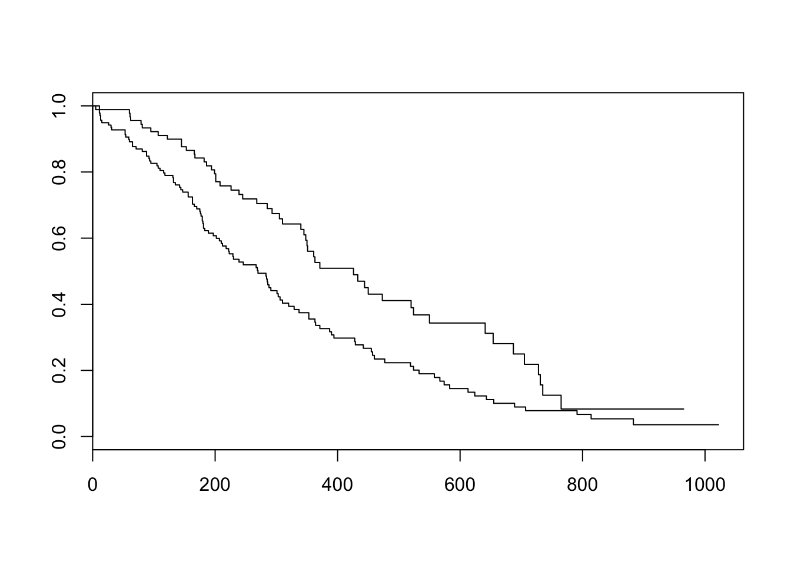
There are lots of ways to modify the plot produced by base R’s plot() function. You can see more options with the help for ?plot.survfit. We’re not going to go into any more detail here, because there’s another package called survminer that provides a function called ggsurvplot() that makes it much easier to produce publication-ready survival plots, and if you’re familiar with ggplot2 syntax it’s pretty easy to modify. So, let’s load the package and try it out.
library(survminer)
ggsurvplot(sfit)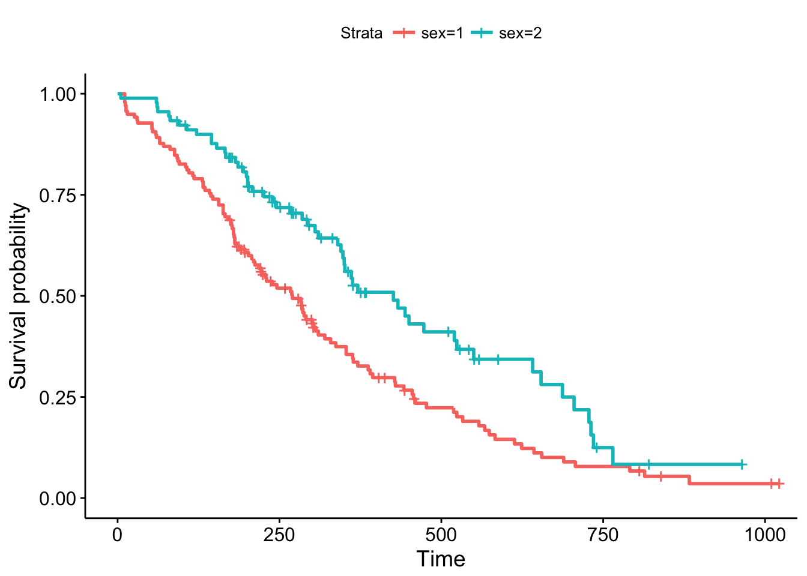
This plot is substantially more informative by default, just because it automatically color codes the different groups, adds axis labels, and creates and automatic legend. But there’s a lot more you can do pretty easily here. Let’s add confidence intervals, show the p-value for the log-rank test, show a risk table below the plot, and change the colors and the group labels.
ggsurvplot(sfit, conf.int=TRUE, pval=TRUE, risk.table=TRUE,
legend.labs=c("Male", "Female"), legend.title="Sex",
palette=c("dodgerblue2", "orchid2"),
title="Kaplan-Meier Curve for Lung Cancer Survival",
risk.table.height=.15)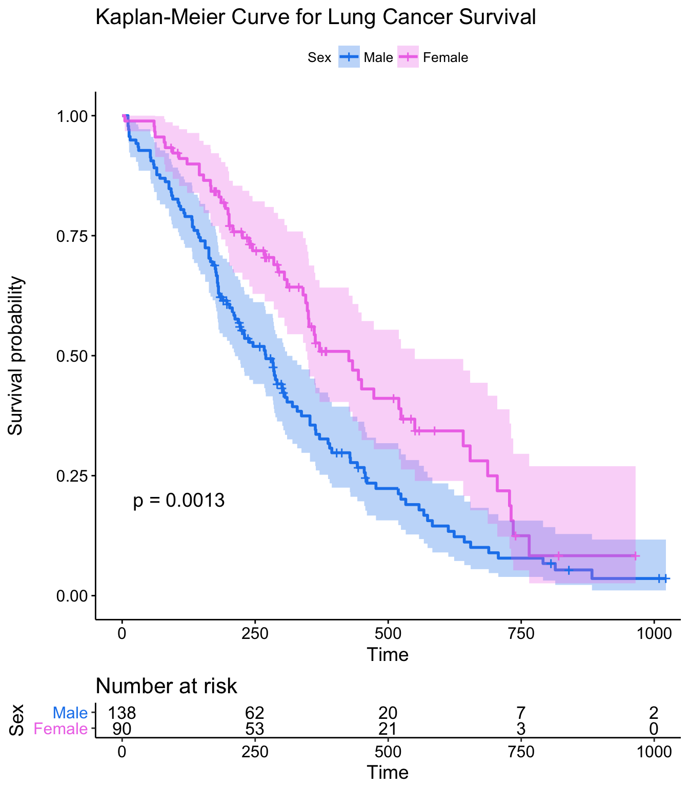
Exercise set 1
Take a look at the built in colon dataset. If you type ?colon it’ll ask you if you wanted help on the colon dataset from the survival package, or the colon operator. Click “Chemotherapy for Stage B/C colon cancer”, or be specific with ?survival::colon. This dataset has survival and recurrence information on 929 people from a clinical trial on colon cancer chemotherapy. There are two rows per person, indidicated by the event type (etype) variable – etype==1 indicates that row corresponds to recurrence; etype==2 indicates death.
First, let’s turn the colon data into a tibble, then filter the data to only include the survival data, not the recurrence data. Let’s call this new object colondeath. The filter() function is in the dplyr library, which you can get by running library(dplyr). If you don’t have dplyr you can use the base subset() function instead.
library(dplyr)
colon <- as_tibble(colon)
colondeath <- filter(colon, etype==2)
# Or, using base subset()
# colondeath <- subset(colon, etype==2)
head(colondeath)Look at the help for
?colonagain. How aresexandstatuscoded? How is this different from the lung data?Using
survfit(Surv(..., ...,)~..., data=colondeath), create a survival curve separately for males versus females. Call the resulting objectsfit. Run asummary()on this object, showing time points 0, 500, 1000, 1500, and 2000. Do males or females appear to fair better over this time period?
## sex=0
## time n.risk n.event survival std.err lower 95% CI upper 95% CI
## 0 445 0 1.000 0.0000 1.000 1.000
## 500 381 64 0.856 0.0166 0.824 0.889
## 1000 306 75 0.688 0.0220 0.646 0.732
## 1500 265 40 0.598 0.0232 0.554 0.645
## 2000 218 22 0.547 0.0236 0.503 0.596
##
## sex=1
## time n.risk n.event survival std.err lower 95% CI upper 95% CI
## 0 484 0 1.000 0.0000 1.000 1.000
## 500 418 65 0.866 0.0155 0.836 0.897
## 1000 335 83 0.694 0.0210 0.654 0.736
## 1500 287 46 0.598 0.0223 0.556 0.644
## 2000 238 25 0.545 0.0227 0.503 0.592- Using the survminer package, plot a Kaplan-Meier curve for this analysis with confidence intervals and showing the p-value. See
?ggsurvplotfor help. Is there a significant difference between males and females?

- Create Kaplan-Meier plot stratifying by:
- The extent of differentiation (well, moderate, poor), showing the p-value.
- Whether or not there was detectable cancer in >=4 lymph nodes, showing the p-value and confidence bands.
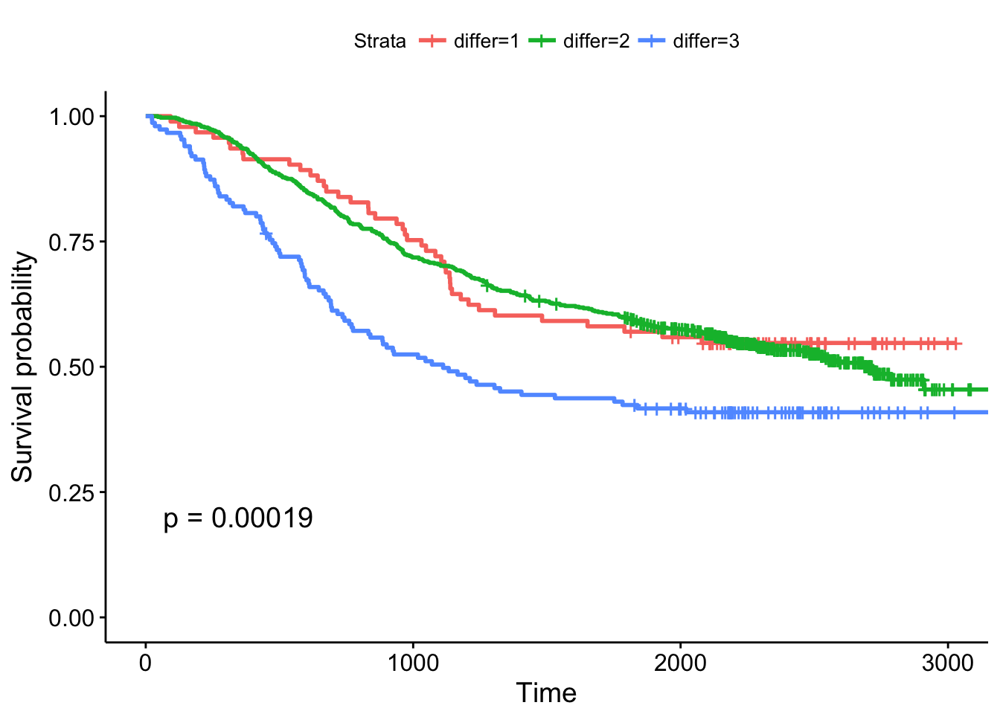
Cox Regression
Kaplan-Meier curves are good for visualizing differences in survival between two categorical groups, and the log-rank test you get when you ask for pval=TRUE is useful for asking if there are differences in survival between different groups. But this doesn’t generalize well for assessing the effect of quantitative variables. Just try creating a K-M plot for the nodes variable, which has values that range from 0-33. What a mess! Don’t do this.
ggsurvplot(survfit(Surv(time, status)~nodes, data=colondeath))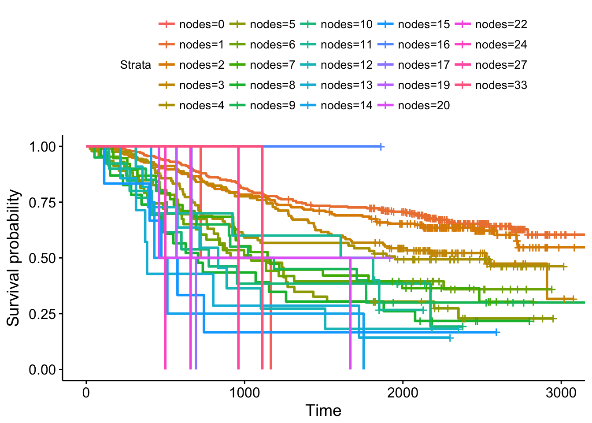
At some point using a categorical grouping for K-M plots breaks down, and further, you might want to assess how multiple variables work together to influence survival. For example, you might want to simultaneously examine the effect of race and socioeconomic status, so as to adjust for factors like income, access to care, etc., before concluding that ethnicity influences some outcome.
Cox PH regression can assess the effect of both categorical and continuous variables, and can model the effect of multiple variables at once. The coxph() function uses the same syntax as lm(), glm(), etc. The response variable you create with Surv() goes on the left hand side of the formula, specified with a ~. Explanatory variables go on the right side.
Let’s go back to the lung cancer data and run a Cox regression on sex.
fit <- coxph(Surv(time, status)~sex, data=lung)
fit## Call:
## coxph(formula = Surv(time, status) ~ sex, data = lung)
##
## coef exp(coef) se(coef) z p
## sex -0.531 0.588 0.167 -3.18 0.0015
##
## Likelihood ratio test=10.6 on 1 df, p=0.00111
## n= 228, number of events= 165The exp(coef) column contains \(e^{\beta_1}\) (see background section above for more info). This is the hazard ratio – the multiplicative effect of that variable on the hazard rate (for each unit increase in that variable). So, for a categorical variable like sex, going from male (baseline) to female results in approximately ~40% reduction in hazard. You could also flip the sign on the coef column, and take exp(0.531), which you can interpret as being male resulting in a 1.7-fold increase in hazard, or that males die ad approximately 1.7x the rate per unit time as females (females die at 0.588x the rate per unit time as males).
Just remember:
- HR=1: No effect
- HR>1: Increase in hazard
- HR<1: Reduction in hazard (protective)
You’ll also notice there’s a p-value on the sex term, and a p-value on the overall model. That 0.00111 p-value is really close to the p=0.00131 p-value we saw on the Kaplan-Meier plot. That’s because the KM plot is showing the log-rank test p-value. You can get this out of the Cox model with a call to summary(fit). You can directly calculate the log-rank test p-value using survdiff().
summary(fit)
survdiff(Surv(time, status)~sex, data=lung)Let’s create another model where we analyze all the variables in the dataset! This shows us how all the variables, when considered together, act to influence survival. Some are very strong predictors (sex, ECOG score). Interestingly, the Karnofsky performance score as rated by the physician was marginally significant, while the same score as rated by the patient was not.
fit <- coxph(Surv(time, status)~sex+age+ph.ecog+ph.karno+pat.karno+meal.cal+wt.loss, data=lung)
fit## Call:
## coxph(formula = Surv(time, status) ~ sex + age + ph.ecog + ph.karno +
## pat.karno + meal.cal + wt.loss, data = lung)
##
## coef exp(coef) se(coef) z p
## sex -5.51e-01 5.76e-01 2.01e-01 -2.74 0.0061
## age 1.06e-02 1.01e+00 1.16e-02 0.92 0.3591
## ph.ecog 7.34e-01 2.08e+00 2.23e-01 3.29 0.0010
## ph.karno 2.25e-02 1.02e+00 1.12e-02 2.00 0.0457
## pat.karno -1.24e-02 9.88e-01 8.05e-03 -1.54 0.1232
## meal.cal 3.33e-05 1.00e+00 2.60e-04 0.13 0.8979
## wt.loss -1.43e-02 9.86e-01 7.77e-03 -1.84 0.0652
##
## Likelihood ratio test=28.3 on 7 df, p=0.000192
## n= 168, number of events= 121
## (60 observations deleted due to missingness)Exercise set 2
Let’s go back to the colon cancer dataset. Remember, you created a colondeath object in the first exercise that only includes survival (etype==2), not recurrence data points. See ?colon for more information about this dataset.
- Take a look at
levels(colondeath$rx). This tells you that therxvariable is the type of treatment the patient was on, which is either nothing (codedObs, short for Observation), Levamisole (codedLev), or Levamisole + 5-fluorouracil (codedLev+5FU). This is a factor variable coded with these levels, in that order. This means thatObsis treated as the baseline group, and other groups are dummy-coded to represent the respective group.
| rx | Lev | Lev+5FU |
|---|---|---|
| Obs | 0 | 0 |
| Lev | 1 | 0 |
| Lev+5FU | 0 | 1 |
- Run a Cox proportional hazards regression model against this
rxvariable. How do you interpret the result? Which treatment seems to be significantly different from the control (Observation)?
## coef exp(coef) se(coef) z p
## rxLev -0.0266 0.9737 0.1103 -0.24 0.8092
## rxLev+5FU -0.3717 0.6896 0.1188 -3.13 0.0017
##
## Likelihood ratio test=12.2 on 2 df, p=0.0023
## n= 929, number of events= 452- Show the results using a Kaplan-Meier plot, with confidence intervals and the p-value.

- Fit another Cox regression model accounting for age, sex, and the number of nodes with detectable cancer. Notice the test statistic on the likelihood ratio test becomes much larger, and the overall model becomes more significant. What do you think accounted for this increase in our ability to model survival?
## coef exp(coef) se(coef) z p
## rxLev -0.08007 0.92305 0.11161 -0.72 0.47312
## rxLev+5FU -0.40253 0.66863 0.12054 -3.34 0.00084
## age 0.00533 1.00535 0.00405 1.32 0.18739
## sex -0.02826 0.97214 0.09573 -0.30 0.76786
## nodes 0.09275 1.09719 0.00887 10.46 < 2e-16
##
## Likelihood ratio test=87.8 on 5 df, p=0
## n= 911, number of events= 441
## (18 observations deleted due to missingness)Categorizing for KM plots
Let’s go back to the lung data and look at a Cox model for age. Looks like age is very slightly significant when modeled as a continuous variable.
coxph(Surv(time, status)~age, data=lung)Now that your regression analysis shows you that age is marginally significant, let’s make a Kaplan-Meier plot. But, as we saw before, we can’t just do this, because we’ll get a separate curve for every unique value of age!
ggsurvplot(survfit(Surv(time, status)~age, data=lung))One thing you might see here is an attempt to categorize a continuous variable into different groups – tertiles, upper quartile vs lower quartile, a median split, etc – so you can make the KM plot. But, how you make that cut is meaningful! Check out the help for ?cut. cut() takes a continuous variable and some breakpoints and creats a categorical variable from that. Let’s get the average age in the dataset, and plot a histogram showing the distribution of age.
mean(lung$age)
hist(lung$age)
ggplot(lung, aes(age)) + geom_histogram(bins=20)Now, let’s try creating a categorical variable on lung$age with cut pounts at 0, 62 (the mean), and +Infinity (no upper limit). We could continue adding a labels= option here to label the groupings we create, for instance, as “young” and “old”. Finally, we could assign the result of this to a new object in the lung dataset.
cut(lung$age, breaks=c(0, 62, Inf))
cut(lung$age, breaks=c(0, 62, Inf), labels=c("young", "old"))
# the base r way:
lung$agecat <- cut(lung$age, breaks=c(0, 62, Inf), labels=c("young", "old"))
# or the dplyr way:
lung <- lung %>%
mutate(agecat=cut(age, breaks=c(0, 62, Inf), labels=c("young", "old")))
head(lung)Now, what happens when we make a KM plot with this new categorization? It looks like there’s some differences in the curves between “old” and “young” patients, with older patients having slightly worse survival odds. But at p=.39, the difference in survival between those younger than 62 and older than 62 are not significant.
ggsurvplot(survfit(Surv(time, status)~agecat, data=lung), pval=TRUE)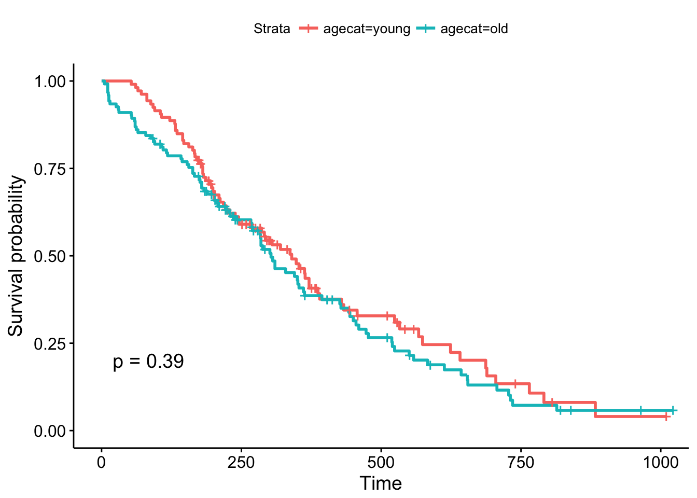
But, what if we chose a different cut point, say, 70 years old, which is roughly the cutoff for the upper quartile of the age distribution (see ?quantile). The result is now marginally significant!
# the base r way:
lung$agecat <- cut(lung$age, breaks=c(0, 70, Inf), labels=c("young", "old"))
# or the dplyr way:
lung <- lung %>%
mutate(agecat=cut(age, breaks=c(0, 70, Inf), labels=c("young", "old")))
# plot!
ggsurvplot(survfit(Surv(time, status)~agecat, data=lung), pval=TRUE)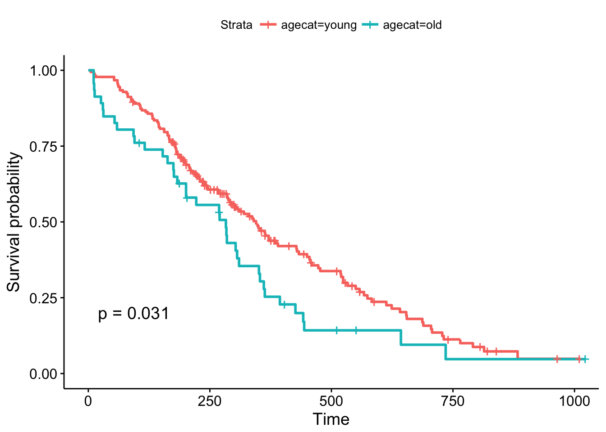
Remember, the Cox regression analyzes the continuous variable over the whole range of its distribution, where the log-rank test on the Kaplan-Meier plot can change depending on how you categorize your continuous variable. They’re answering a similar question in a different way: the regression model is asking, “what is the effect of age on survival?”, while the log-rank test and the KM plot is asking, “are there differences in survival between those less than 70 and those greater than 70 years old?”.
(New in survminer 0.2.4: the survminer package can now determine the optimal cutpoint for one or multiple continuous variables at once, using the surv_cutpoint() and surv_categorize() functions. Refer to this blog post for more information.)
TCGA
The Cancer Genome Atlas (TCGA) is a collaboration between the National Cancer Institute (NCI) and the National Human Genome Research Institute (NHGRI) that collected lots of clinical and genomic data across 33 cancer types. The entire TCGA dataset is over 2 petabytes worth of gene expression, CNV profiling, SNP genotyping, DNA methylation, miRNA profiling, exome sequencing, and other types of data. You can learn more about TCGA at cancergenome.nih.gov. The data is now housed at the Genomic Data Commons Portal. There are lots of ways to access TCGA data without actually downloading and parsing through the data from GDC. We’ll cover more of these below. But first, let’s look at an R package that provides convenient, direct access to TCGA data.
RTCGA
The RTCGA package (bioconductor.org/packages/RTCGA) and all the associated data packages provide convenient access to clinical and genomic data in TCGA. Each of the data packages is a separate package, and must be installed (once) individually.
# Load the bioconductor installer.
# Try http:// if https:// doesn't work.
source("https://bioconductor.org/biocLite.R")
# Install the main RTCGA package
biocLite("RTCGA")
# Install the clinical and mRNA gene expression data packages
biocLite("RTCGA.clinical")
biocLite("RTCGA.mRNA")Let’s load the RTCGA package, and use the infoTCGA() function to get some information about the kind of data available for each cancer type.
library(RTCGA)
infoTCGA()Survival Analysis with RTCGA Clinical Data
Next, let’s load the RTCGA.clinical package and get a little help about what’s available there.
library(RTCGA.clinical)
?clinicalThis tells us all the clinical datasets available for each cancer type. If we just focus on breast cancer, look at how big the data is! There are 1098 rows by 3703 columns in this data alone. Let’s look at some of the variable names. Be careful with View() here – with so many columns, depending on which version of RStudio you have that may or may not have fixed this issue, Viewing a large dataset like this may lock up your RStudio.
dim(BRCA.clinical)
names(BRCA.clinical)
# View(BRCA.clinical)We’re going to use the survivalTCGA() function from the RTCGA package to pull out survival information from the clinical data. It does this by looking at vital status (dead or alive) and creating a times variable that’s either the days to death or the days followed up before being censored. Look at the help for ?survivalTCGA for more info. You give it a list of clinical datasets to pull from, and a character vector of variables to extract. Let’s look at breast cancer, ovarian cancer, and glioblastoma multiforme. Let’s just extract the cancer type (admin.disease_code).
# Create the clinical data
clin <- survivalTCGA(BRCA.clinical, OV.clinical, GBM.clinical,
extract.cols="admin.disease_code")
# Show the first few lines
head(clin)## times bcr_patient_barcode patient.vital_status admin.disease_code
## 1 3767 TCGA-3C-AAAU 0 brca
## 2 3801 TCGA-3C-AALI 0 brca
## 3 1228 TCGA-3C-AALJ 0 brca
## 4 1217 TCGA-3C-AALK 0 brca
## 5 158 TCGA-4H-AAAK 0 brca
## 6 1477 TCGA-5L-AAT0 0 brca# How many samples of each type?
table(clin$admin.disease_code)##
## brca gbm ov
## 1098 595 576# Tabulate by outcome
xtabs(~admin.disease_code+patient.vital_status, data=clin) %>% addmargins()## patient.vital_status
## admin.disease_code 0 1 Sum
## brca 994 104 1098
## gbm 149 446 595
## ov 279 297 576
## Sum 1422 847 2269Now let’s run a Cox PH model against the disease code. By default it’s going to treat breast cancer as the baseline, because alphabetically it’s first. But you can reorder this if you want with factor().
coxph(Surv(times, patient.vital_status)~admin.disease_code, data=clin)## Call:
## coxph(formula = Surv(times, patient.vital_status) ~ admin.disease_code,
## data = clin)
##
## coef exp(coef) se(coef) z p
## admin.disease_codegbm 2.887 17.948 0.113 25.6 <2e-16
## admin.disease_codeov 1.547 4.697 0.115 13.4 <2e-16
##
## Likelihood ratio test=904 on 2 df, p=0
## n= 2269, number of events= 847This tells us that compared to the baseline brca group, GBM patients have a ~18x increase in hazards, and ovarian cancer patients have ~5x worse survival. Let’s create a survival curve, visualize it with a Kaplan-Meier plot, and show a table for the first 5 years survival rates.
sfit <- survfit(Surv(times, patient.vital_status)~admin.disease_code, data=clin)
summary(sfit, times=seq(0,365*5,365))## Call: survfit(formula = Surv(times, patient.vital_status) ~ admin.disease_code,
## data = clin)
##
## admin.disease_code=brca
## time n.risk n.event survival std.err lower 95% CI upper 95% CI
## 0 1096 0 1.000 0.00000 1.000 1.000
## 365 588 13 0.981 0.00516 0.971 0.992
## 730 413 11 0.958 0.00851 0.942 0.975
## 1095 304 20 0.905 0.01413 0.878 0.933
## 1460 207 9 0.873 0.01719 0.840 0.908
## 1825 136 14 0.799 0.02474 0.752 0.849
##
## admin.disease_code=gbm
## time n.risk n.event survival std.err lower 95% CI upper 95% CI
## 0 595 2 0.9966 0.00237 0.9920 1.0000
## 365 224 257 0.5110 0.02229 0.4692 0.5567
## 730 75 127 0.1998 0.01955 0.1649 0.2420
## 1095 39 31 0.1135 0.01617 0.0858 0.1500
## 1460 27 9 0.0854 0.01463 0.0610 0.1195
## 1825 12 9 0.0534 0.01259 0.0336 0.0847
##
## admin.disease_code=ov
## time n.risk n.event survival std.err lower 95% CI upper 95% CI
## 0 576 0 1.000 0.0000 1.000 1.000
## 365 411 59 0.888 0.0139 0.861 0.915
## 730 314 55 0.761 0.0198 0.724 0.801
## 1095 210 59 0.602 0.0243 0.556 0.651
## 1460 133 49 0.451 0.0261 0.402 0.505
## 1825 78 39 0.310 0.0260 0.263 0.365ggsurvplot(sfit, conf.int=TRUE, pval=TRUE)
Gene Expression Data
Let’s load the gene expression data.
library(RTCGA.mRNA)
?mRNATake a look at the size of the BRCA.mRNA dataset, show a few rows and columns.
dim(BRCA.mRNA)
BRCA.mRNA[1:5, 1:5]Extra credit assignment: Take a look at the advanced data manipulation and tidy data classes, and see if you can figure out how to join the gene expression data to the clinical data for any particular cancer type.
# Take the mRNA data
BRCA.mRNA %>%
# then make it a tibble (nice printing while debugging)
as_tibble() %>%
# then get just a few genes
select(bcr_patient_barcode, PAX8, GATA3, ESR1) %>%
# then trim the barcode (see head(clin), and ?substr)
mutate(bcr_patient_barcode = substr(bcr_patient_barcode, 1, 12)) %>%
# then join back to clinical data
inner_join(clin, by="bcr_patient_barcode")Similar to how survivalTCGA() was a nice helper function to pull out survival information from multiple different clinical datasets, expressionsTCGA() can pull out specific gene expression measurements across different cancer types. See the help for ?expressionsTCGA. Let’s pull out data for PAX8, GATA-3, and the estrogen receptor genes from breast, ovarian, and endometrial cancer, and plot the expression of each with a box plot.
library(ggplot2)
expr <- expressionsTCGA(BRCA.mRNA, OV.mRNA, UCEC.mRNA,
extract.cols = c("PAX8", "GATA3", "ESR1"))
head(expr)## # A tibble: 6 x 5
## bcr_patient_barcode dataset PAX8 GATA3 ESR1
## <chr> <chr> <dbl> <dbl> <dbl>
## 1 TCGA-A1-A0SD-01A-11R-A115-07 BRCA.mRNA -0.542 2.87 3.084
## 2 TCGA-A1-A0SE-01A-11R-A084-07 BRCA.mRNA -0.595 2.17 2.386
## 3 TCGA-A1-A0SH-01A-11R-A084-07 BRCA.mRNA 0.500 1.32 0.791
## 4 TCGA-A1-A0SJ-01A-11R-A084-07 BRCA.mRNA -0.589 1.84 2.495
## 5 TCGA-A1-A0SK-01A-12R-A084-07 BRCA.mRNA -0.965 -6.03 -4.861
## 6 TCGA-A1-A0SM-01A-11R-A084-07 BRCA.mRNA 0.573 1.80 2.797table(expr$dataset)##
## BRCA.mRNA OV.mRNA UCEC.mRNA
## 590 561 54ggplot(expr, aes(dataset, PAX8, fill=dataset)) + geom_boxplot()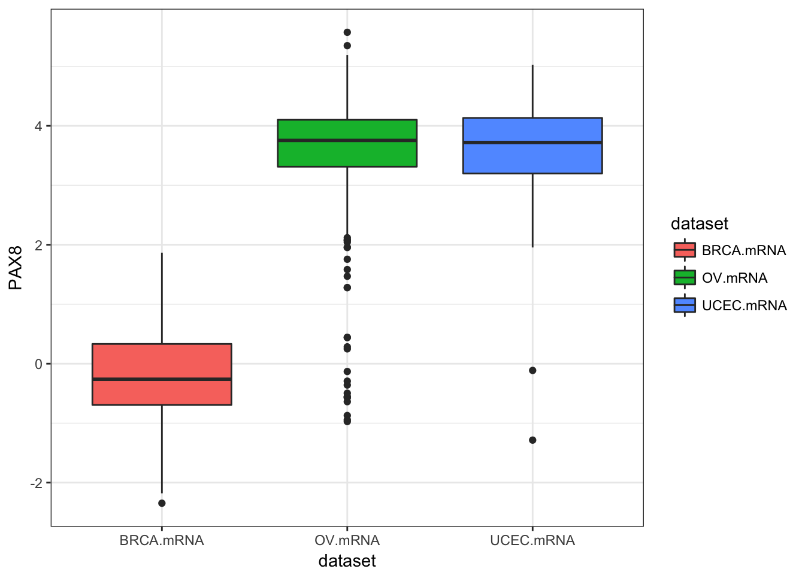
ggplot(expr, aes(dataset, GATA3, fill=dataset)) + geom_boxplot()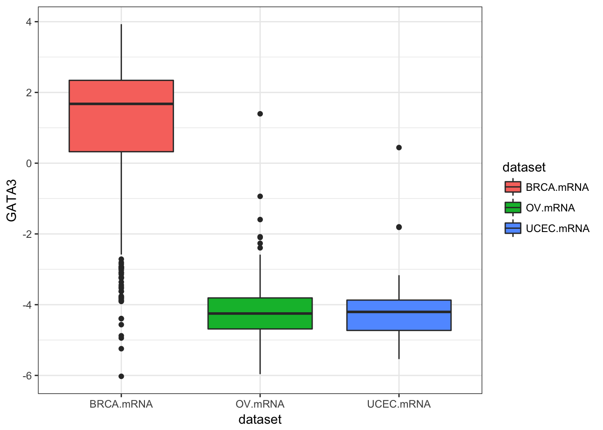
ggplot(expr, aes(dataset, ESR1, fill=dataset)) + geom_boxplot()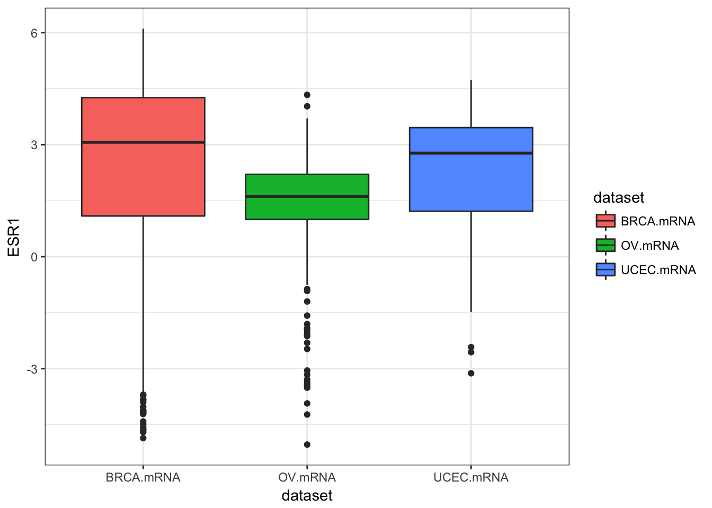
ggplot(expr, aes(dataset, ESR1, fill=dataset)) + geom_violin()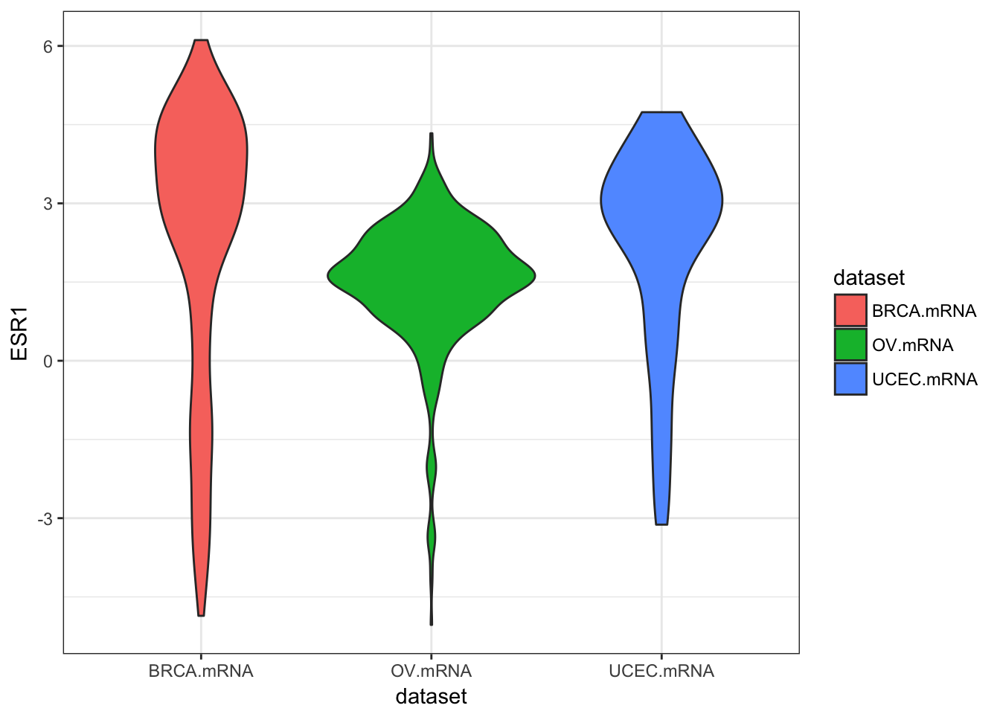
We could also use tidyr to do this all in one go.
library(tidyr)
expr %>%
as_tibble() %>%
gather(gene, expression, PAX8, GATA3, ESR1) %>%
ggplot(aes(dataset, expression, fill=dataset)) +
geom_boxplot() +
facet_wrap(~gene)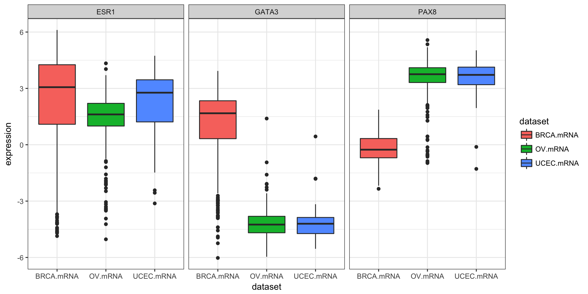
Exercise set 3
The “KIPAN” cohort (in KIPAN.clinical) is the pan-kidney cohort, consisting of KICH (chromaphobe renal cell carcinoma), KIRC (renal clear cell carcinoma), and KIPR (papillary cell carcinoma). The KIPAN.clinical has KICH.clinical, KIRC.clinical, and KIPR.clinical all combined.
- Using
survivalTCGA(), create a new object calledclinkidusing theKIPAN.clinicalcohort. For the columns to extract, get both the disease code and the patient’s gender (extract.cols=c("admin.disease_code", "patient.gender")). The first few rows will look like this.
## times bcr_patient_barcode patient.vital_status admin.disease_code
## 1 1158 TCGA-KL-8323 1 kich
## 2 4311 TCGA-KL-8324 0 kich
## 3 725 TCGA-KL-8325 1 kich
## 4 3322 TCGA-KL-8326 0 kich
## 5 3553 TCGA-KL-8327 0 kich
## 6 3127 TCGA-KL-8328 0 kich
## patient.gender
## 1 female
## 2 female
## 3 female
## 4 male
## 5 female
## 6 male- The
xtabs()command will produce tables of counts for categorical variables. Here’s an example for how to usextabs()for the built-in colon cancer dataset, which will tell you the number of samples split by sex and by treatment.
xtabs(~rx+sex, data=colon)## sex
## rx 0 1
## Obs 298 332
## Lev 266 354
## Lev+5FU 326 282Use the same command to examine how many samples you have for each kidney sample type, separately by sex.
## patient.gender
## admin.disease_code female male
## kich 51 61
## kirc 191 346
## kirp 76 212- Run a Cox PH regression on the cancer type and gender. What’s the effect of gender? Is it significant? How does survival differ by each type? Which has the worst prognosis?
## coef exp(coef) se(coef) z p
## admin.disease_codekirc 1.5929 4.9179 0.3450 4.62 3.9e-06
## admin.disease_codekirp 0.9962 2.7080 0.3807 2.62 0.0089
## patient.gendermale -0.0628 0.9391 0.1484 -0.42 0.6721
##
## Likelihood ratio test=39.4 on 3 df, p=1.4e-08
## n= 937, number of events= 203- Create survival curves for each different subtype.
- Produce a Kaplan-Meier plot.
- Show survival tables each year for the first 5 years.
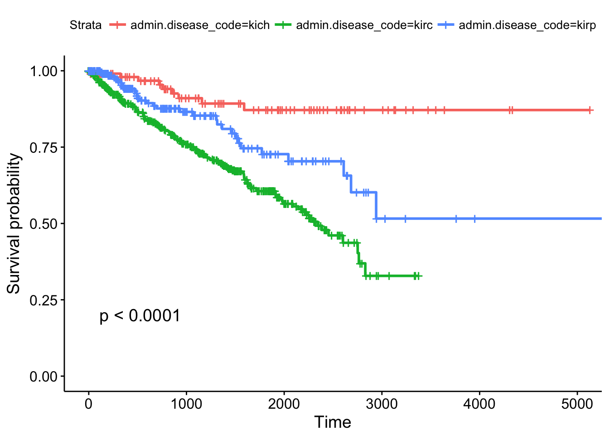
## Call: survfit(formula = Surv(times, patient.vital_status) ~ admin.disease_code,
## data = clinkid)
##
## admin.disease_code=kich
## time n.risk n.event survival std.err lower 95% CI upper 95% CI
## 0 111 0 1.000 0.0000 1.000 1.000
## 365 86 2 0.980 0.0144 0.952 1.000
## 730 72 2 0.954 0.0226 0.911 0.999
## 1095 54 3 0.910 0.0329 0.848 0.977
## 1460 44 1 0.893 0.0366 0.824 0.967
## 1825 38 1 0.871 0.0415 0.794 0.957
##
## admin.disease_code=kirc
## time n.risk n.event survival std.err lower 95% CI upper 95% CI
## 0 536 0 1.000 0.0000 1.000 1.000
## 365 385 49 0.895 0.0142 0.868 0.924
## 730 313 32 0.816 0.0186 0.781 0.853
## 1095 250 26 0.744 0.0217 0.703 0.788
## 1460 181 20 0.678 0.0243 0.633 0.728
## 1825 112 16 0.606 0.0277 0.554 0.663
##
## admin.disease_code=kirp
## time n.risk n.event survival std.err lower 95% CI upper 95% CI
## 0 288 0 1.000 0.0000 1.000 1.000
## 365 145 10 0.941 0.0182 0.906 0.977
## 730 100 8 0.877 0.0278 0.824 0.933
## 1095 67 2 0.853 0.0316 0.793 0.917
## 1460 54 3 0.810 0.0388 0.737 0.889
## 1825 36 5 0.727 0.0495 0.636 0.831Other TCGA Resources
RTCGA isn’t the only resource providing easy access to TCGA data. In fact, it isn’t even the only R/Bioconductor package. Take a look at some of the other resources shown below.
- TCGAbiolinks: another R package that allows direct query and analysis from the NCI GDC.
- R package: bioconductor.org/packages/TCGAbiolinks
- Paper: Nucleic Acids Research 2015 DOI: 10.1093/nar/gkv1507.
- cBioPortal: cbioportal.org
- Nice graphical user interface
- Quick/easy summary info on patients, demographics, mutations, copy number alterations, etc.
- Query individual genes, find coexpressed genes
- Survival analysis against different subtypes, expression, CNAs, etc.
- OncoLnc: oncolnc.org
- Focus on survival analysis and RNA-seq data.
- Simple query interface across all cancers for any mRNA, miRNA, or lncRNA gene (try SERPINA1)
- Precomputed Cox PH regression for every gene, for every cancer
- Kaplan-Meier plots produced on demand
- TANRIC: focus on noncoding RNA
- MEXPRESS: focus on methylation and gene expression
In the medical world, we typically think of survival analysis literally – tracking time until death. But, it’s more general than that – survival analysis models time until an event occurs (any event). This might be death of a biological organism. But it could also be the time until a hardware failure in a mechanical system, time until recovery, time someone remains unemployed after losing a job, time until a ripe tomato is eaten by a grazing deer, time until someone falls asleep in a workshop, etc. Survival analysis also goes by reliability theory in engineering, duration analysis in economics, and event history analysis in sociology.↩
This describes the most common type of censoring – right censoring. Left censoring less commonly occurs when the “start” is unknown, such as when an initial diagnosis or exposure time is unknown.↩
And, following the definitions above, assumes that the cumulative hazard ratio between two groups remains constant over time.↩
And there’s a chi-square-like statistical test for these differences called the log-rank test that compare the survival functions categorical groups.↩
See the multiple regression section of the essential statistics lesson.↩
Cox regression and the logrank test from
survdiffare going to give you similar results most of the time. The log-rank test is asking if survival curves differ significantly between two groups. Cox regression is asking which of many categorical or continuous variables significantly affect survival.↩Surv()can also take start and stop times, to account for left censoring. See the help for?Surv.↩Loprinzi et al. Prospective evaluation of prognostic variables from patient-completed questionnaires. North Central Cancer Treatment Group. Journal of Clinical Oncology. 12(3):601-7, 1994.↩
Where “dead” really refers to the occurance of the event (any event), not necessarily death.↩